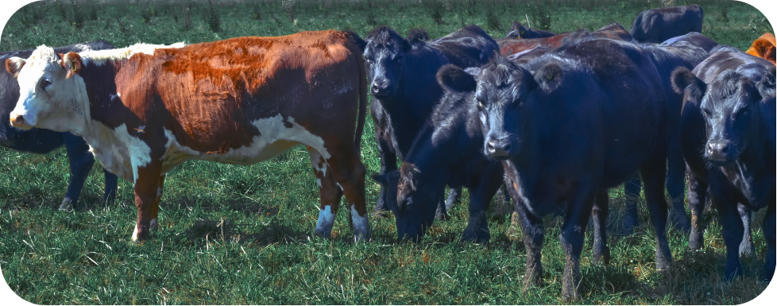

16.000 hectares of crop
16.000 hectares of crop 25-ton storage capacity
25-ton storage capacityIn the 1970s, the Ferruzzi family acquired "Las Cabezas", a estate spanning approximately 20,000 hectares located in Gualeguay, in the southern part of Entre Ríos province, Argentina. It is managed under the firm Entre Ríos S.A.
With around 16,000 hectares of crops, in the agriculture division, we focus on growing various products such as wheat, peas, soybeans, corn, and sorghum. In recent years, we have expanded into the cultivation of specialty crops such as lupine, canola, flint maize, among others, through agreements with leading companies. We have also ventured into maize seed production, incorporating irrigation systems as part of a long-term growth project.
.png)
The agriculture operation is integrated, having its own machinery and a storage plant with a capacity of 25,000 tons, which allows adding value to over 50,000 tons produced annually.
The company is actively involved in seed production with expansion plans to approximately 2,000 irrigated hectares.
With the aim of processing peas, popcorn maize, and other specialties for export.
The continuous exploration of new crops, such as canola and lupine, aligns with the company's commitment to sustainability and long-term business development.
It is the company's objective to integrate into the value chain, seeking to directly or associatively export the specialties produced in our fields.
Initiatives include, among others, seeking CRS (Certified Responsible Soya) and RTRS (Round Table on Responsible Soy Association) certifications for soy sustainability.
Precision agriculture practices, the application of technology in pasture management, and variable seeding and fertilization demonstrate our commitment to technological advancements.
In Argentina, at "Las Cabezas" estate, we engage in full-cycle livestock farming, annually producing over 1,000,000 kilograms of beef. We have approximately 10,000 head of cattle (4,500 breeding cows).
Our production approach prioritizes efficiency and technology, working with electronic tagging and data collection to achieve maximum traceability. We implement intensive rotational grazing on alfalfa-based pastures and employ a finishing system under a low density feedlot to ensure animal welfare.
Our cattle herd consists of Hereford and Angus breeds, with participation in the breeding programs of both associations. We have an ambitious genetic development plan focusing on productivity efficiency and product quality.

In terms of sustainability, we are measuring the product's carbon footprint with the aim of achieving certification and adding value to the product.
It is our objective to integrate into the value chain, seeking to directly export to the most demanding markets.
 Biomass
BiomassFersam Energy is our most recent division. Driven by the need to accelerate the world's decarbonization process, we decided to engage in the promotion, development, investment, and management of clean energy projects.

Construction of a Green Ammonium Nitrate production plant, utilizing hydroelectric energy. Vertically integrated business model with an export focus.
Country: Paraguay | Estimated Investment: USD 1.141 billion | Technological Partner: Maire Tecnimont | Estimated production: 1,380 tons per day of Ammonium Nitrate (fertilizer)
Development of an Energy Service Company (ESCO) based on biomass.
Countries: Argentina and Paraguay | Business model: B2B - Industrial Thermal.
In line with technological evolution, we have decided to engage in supporting and investing in Agtech startups.
.png)
We provide entrepreneurs with our know-how, assets, and business platform to enhance their growth and actively accompany them in their development. The Group is part of the Innventure Venture Capital Fund, which focuses on investments in Agtech and technologies related to the food chain.